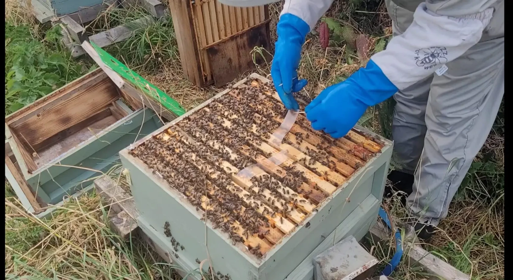

Last updated: 25 August 2026

Last updated: 25 August 2026
How I Use Apivar Strips After the Honey Harvest
Once the main honey crop has finished, one of the first jobs I start thinking about in my apiary is Varroa. I do not like leaving treatment until much later in the year because this is the point when the colonies are beginning to raise the bees that will carry them through winter.
This year, I removed my honey supers on 20 July 2026 and extracted the honey. On 22 July, I returned the wet supers to the colonies so the bees could clean up the remaining honey. I left them on for a few days, then removed them again on 27 July. With the honey supers finally off the hives, I started my Apivar treatment for Varroa that same day.
The important bit: supers come off before Apivar goes in
I do not put Apivar strips into the hive while the wet supers are back on for cleaning. The current Great Britain product information states that Apivar must not be used during the honey flow or when honey supers are present. I let the bees finish cleaning the supers first, remove and store them, and then begin treatment.
Why I Treat After the Honey Harvest
For me, late summer is one of the most important times of the year to get Varroa under control. The honey harvest may feel like the end of the season, but for the colony it is the beginning of the preparation for winter.
Varroa mites do not simply weaken individual adult bees. They reproduce in capped brood and are associated with the transmission and amplification of damaging viruses. If mite levels are allowed to remain high while the colony is producing its longer-lived winter population, the colony can go into autumn already under unnecessary pressure.
That is why I want to know what the mite situation is rather than treating by the calendar alone. I monitor my colonies and use the result, together with the stage of the season, to decide when control is needed. The current Apivar product information also recommends routine monitoring before treatment and afterwards so that the success of treatment can be assessed.
My Sequence After Taking the Honey Off
This year, my own apiary timetable looked like this:
- 20 July 2026: I removed the honey supers and took them away for extraction.
- 22 July 2026: I returned the wet supers to the colonies so the bees could clean up the residual honey.
- 27 July 2026: I removed the cleaned supers for the final time.
- 27 July 2026: With no honey supers on the hives, I started my Apivar treatment for Varroa and recorded the treatment date.
I like doing it this way because the bees get a few days to clean the supers properly, but there is still a clear break between honey production and Varroa treatment. Once the supers were off on 27 July, I could move straight into the autumn management phase of the season.
How I Put the Apivar Strips Into the Hive
Apivar contains amitraz and works by contact. The bees need to walk against the strips and then distribute the active substance through normal contact within the colony, so strip position matters.
For a hive with a single brood chamber, the current Great Britain instructions specify two strips per hive. The important point is that both strips are positioned within the brood area or bee cluster, with at least two frames between them, and that the bees can get to both sides of each strip.
Where I normally position the strips
When the brood nest is sitting in its usual central position in my hive, I normally place one strip between frames 3 and 4 and the second strip between frames 7 and 8. This gives the bees good contact with the strips through the main brood area.
I do not, however, use the frame numbers as an absolute rule. If the brood nest or main bee cluster is sitting further to one side, I position the strips where the bees actually are. The current Great Britain instructions require the strips to be within the brood area or bee cluster, with a minimum distance of two frames between them and with both sides accessible to the bees.
Single brood chamber dosing
The current GB product information states that the safety and efficacy of Apivar have only been investigated in hives with a single brood chamber at a dose of two strips per hive/brood chamber. It says use in hives with more than one brood chamber is not recommended, so I would always check the current leaflet rather than inventing a different dose for another hive configuration.
I also treat the colonies in the apiary at the same time. Treating one hive while leaving neighbouring colonies untreated can make reinfestation more likely as bees drift between colonies.
How Long I Leave Apivar Strips In
This is an area where I think it is easy to work from an old rule of thumb rather than the current instructions, so I use the actual product leaflet.
Under the current Great Britain authorisation:
- If brood is present, the strips are left in place for 10 weeks.
- If brood is absent or at its lowest level, they can be removed after 6 weeks.
- The strips should be removed at the end of treatment and must not be re-used.
When I started treatment on 27 July 2026, there was still brood in my colonies. Under the current instructions that means I am working to the 10-week treatment period, rather than the older 6–8 week rule of thumb that is sometimes quoted. Ten weeks from 27 July takes me to approximately 5 October 2026, so that is the date I need to return and remove the strips. I record the removal date as soon as the strips go in because I do not want forgotten treatment strips sitting in a brood box months later.
I Check the Strip Position During Treatment
The brood nest and bee cluster can move during a long treatment period. A strip that was perfectly positioned when I started may not still be in the busiest area several weeks later.
When I am in the hive, I check that the strips are still where the bees are active. The current product information also allows strips that have become covered in propolis or wax to be gently scratched with a hive tool at mid-treatment and repositioned if necessary so that they remain within the brood area or cluster.
I am not trying to disturb the colony unnecessarily; I simply want the strips to remain where bees will make good contact with them.
Handling the Strips Safely
Apivar is a veterinary medicine, so I treat the strips as medicine rather than just another piece of hive equipment. I wear impermeable gloves and my normal beekeeping protective clothing when handling them, avoid touching my face, and wash my hands afterwards.
I do not cut the strips, re-use old strips or change the recommended dose. I also do not use another parasiticide at the same time. These are all points in the current product information and, for me, they are good reasons to read the leaflet each time rather than relying on what I remember from a previous season.
Feeding While the Strips Are In
Late-summer Varroa treatment often overlaps with the time I am assessing winter stores. If a colony needs feeding, Apivar does not prevent me from doing that. The current product information specifically states that colonies can be fed during treatment, which can also encourage activity and contact with the strips.
As always, I base feeding on the colony rather than simply feeding everything the same amount. I look at the stores already present, colony strength and what is still coming in from the surrounding forage.
Apivar Is Part of My Varroa Management — Not the Whole Plan
I do not look at Apivar as a reason to stop monitoring Varroa. No treatment should be treated as something that automatically works simply because it has been put into the hive.
The current product information says Apivar should form part of an integrated Varroa control programme, with treatment rotation used to help reduce the risk of resistance. It also recommends monitoring during treatment and afterwards.
That is the approach I try to follow. I want to know whether mite levels were high before treatment, whether there is a noticeable mite drop while treatment is underway, and whether the colony is in a better position afterwards.
If a treatment ever appears not to have worked, I would rather investigate why than immediately repeat the same thing.
One Detail That Can Be Misleading: The Honey Withdrawal Is Zero Days
The current Apivar information gives a honey withdrawal period of zero days, but that does not mean I can treat with honey supers on the hive. The same instructions state that Apivar must not be administered when honey supers are present, must not be used during the honey flow and honey must not be harvested while treatment is in place.
For me the rule is therefore straightforward: honey crop first, supers cleaned and removed, Apivar afterwards.
I Record Every Treatment
Because honey bees are a food-producing species, veterinary medicine records are not optional. I record the Apivar purchase details and, when I treat, the date, hive identification, quantity used, duration and withdrawal information. I also keep the relevant medicine records for at least five years.
Apart from the legal requirement, it is genuinely useful. When I look back at a colony I can see what was used, when it went in, when it came out and whether I need to consider a different active ingredient as part of my future Varroa strategy.
The Veterinary Medicines Directorate Product Information Database provides the current authorised product information, while the UK bee medicines guidance explains the record-keeping requirements for beekeepers.
My Late-Summer Apivar Checklist
- Finish the honey harvest.
- Extract the supers.
- Return wet supers for the bees to clean for a few days.
- Remove the cleaned supers completely before treatment.
- Monitor Varroa and assess the colony.
- Use the current authorised product instructions.
- For a single brood chamber, use two strips as directed.
- Do not cut the strips or use another parasiticide at the same time.
- When the brood nest is centred, I normally position one strip between frames 3–4 and the other between frames 7–8; if the cluster is elsewhere, I position them within the brood area or bee cluster instead, keeping at least two frames between the strips and both sides accessible.
- Treat colonies in the apiary at the same time.
- Check strip position during treatment.
- Leave in for the authorised duration — normally 10 weeks when brood is present.
- Remove the strips when treatment finishes.
- Record the treatment and keep the medicine record.
- Monitor afterwards rather than assuming the job is done.
Final Thoughts
Taking the honey off is always a satisfying point in the season, but I also see it as the moment the apiary starts turning towards winter. Once the wet supers have gone back on for a final clean and I have taken them off again, my attention changes from honey production to colony health, stores and winter preparation.
For me, Apivar fits neatly into that transition. I am treating at a time when I no longer need honey supers on the colonies and when getting Varroa pressure down can make a real difference to the condition of the bees going into autumn.
The important thing is not simply to put two strips in and forget about them. I want them positioned correctly, left in for the correct period, removed on time, recorded properly and followed by further monitoring.
This article describes what I do in my own apiary. Apivar is an authorised veterinary medicine, so I always use the current product leaflet supplied with the medicine and check the latest Veterinary Medicines Directorate information because authorised instructions can change.
Frequently Asked Questions
Yes — that is what I do after extraction. I return the wet supers for a few days so the bees can clean them, but I do not start Apivar while those supers are on the hive. I remove the cleaned supers first and only then put the strips in.
I normally start after the last honey harvest once the wet supers have been cleaned and removed from the colonies. I also monitor Varroa rather than relying only on a fixed calendar date.
The current Great Britain product information specifies two strips per hive for a single brood chamber. It states that use in hives with more than one brood chamber is not recommended because safety and efficacy have only been investigated in single-brood hives.
If brood is present, the current instructions say 10 weeks. If brood is absent or at its lowest level, the strips can be removed after 6 weeks. They should be removed when treatment is finished.
When the brood nest is centred in my hive, I normally place one strip between frames 3 and 4 and the second between frames 7 and 8. I do not follow those frame numbers blindly, though: the strips need to sit within the brood area or bee cluster, with at least two frames between them and with bees able to contact both sides. If the brood nest is positioned differently, I move the strips accordingly.
Yes. The current product information says colonies can be fed during treatment. That is useful because treatment often overlaps with my late-summer assessment of winter stores.
Yes. Bees are a food-producing species, and UK veterinary medicine records must be kept for at least five years. I record purchase and administration details, including which hives were treated and when.
Join the Conversation
Beekeeping is all about learning from one another. Follow BeezKnees for more inspection notes, seasonal observations and practical beekeeping tips.